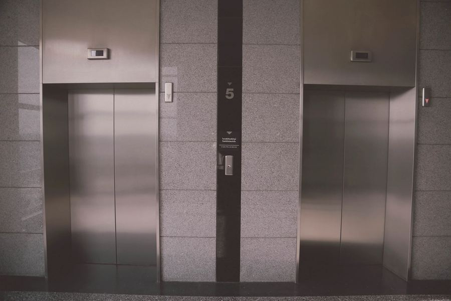
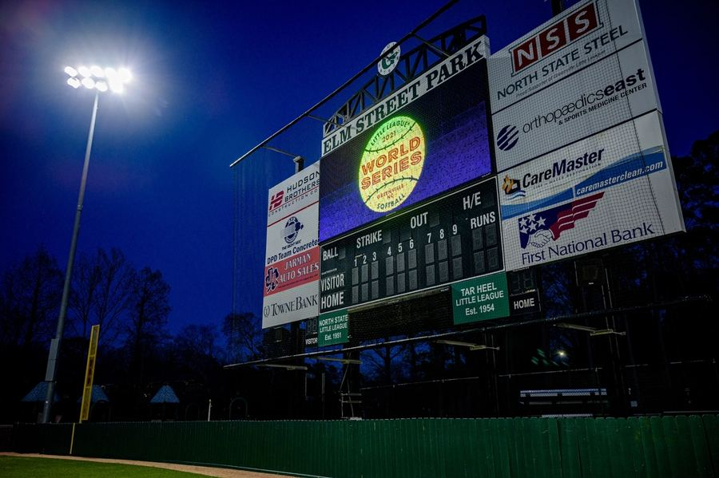
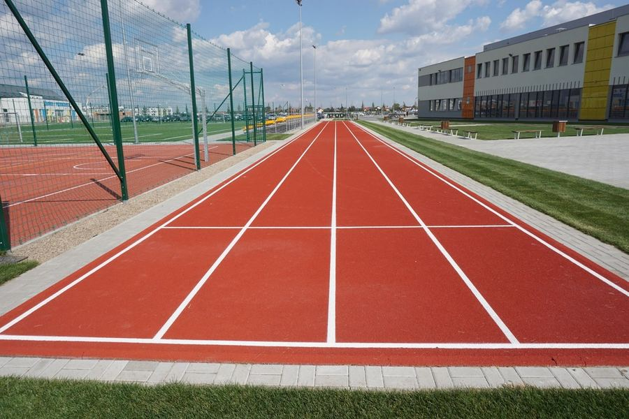
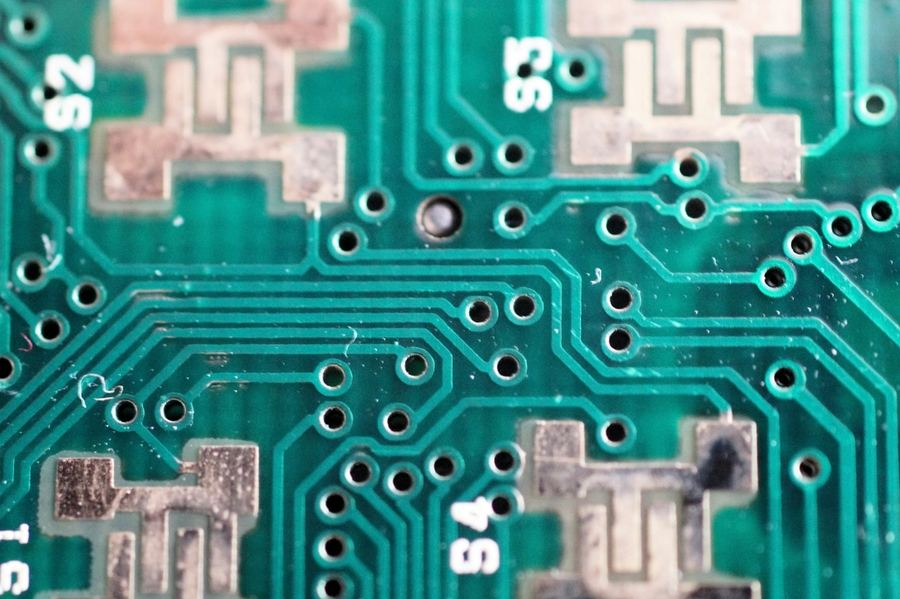
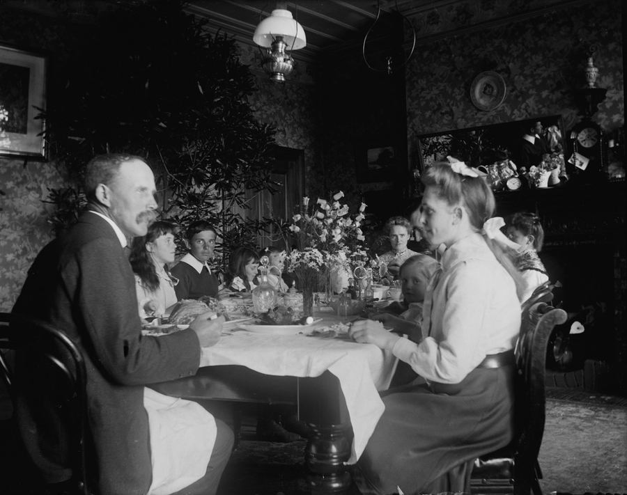
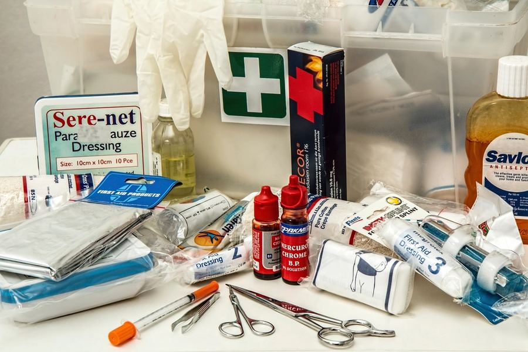

Who is it for?Everyday life: not for a job in the field, just useful for living, deciding and understanding people.
Mind1 course
The mind's mechanismsshort pieces any course can use

Sunk costStaying through a bad movie because you paid

Cognitive dissonanceNew shoes that pinch, called comfy

Fear of missing outJumping into a closing elevator

Confirmation biasSearching for your keys only where you hope they are

AnchoringHaggling down from the sticker on a car

Loss aversionFinding $20, then losing $20

AvailabilityAfraid of sharks, not the drive to the beach

BandwagonPicking the restaurant with the line
Status quo biasNever changing your phone plan
Framing"90% fat free" next to "10% fat"

ReciprocityThe free sample at the cheese counter
AuthorityThe actor in a lab coat in an ad

Scarcity"Only 2 left in stock"

Hindsight bias"I knew it!" after the game

Dunning-Kruger: knowing a littleThe new driver who thinks they drive great

Planning fallacy"Painting the room? An hour."

Variable rewardA slot machine, and the pull-to-refresh on your phone
Halo effectTrusting the friendly, good-looking salesperson
Channels for Mindwhole series on the Internet Archive that go with these courses

Channel · 339 videosVeritasiumScience told through experiments and the wrong answers most people give first.

Channel · 40 videosCrash Course Psychology40 short episodes on how the mind works, including how memory, thinking and judgment go wrong.

Channel · 167 videosKurzgesagt: In a NutshellAnimated explainers on big questions: science, the body, the future, how we think.

Channel · 26 lecturesSocial Psychology (UC Berkeley, Sociology 150A)A full Berkeley course: cognitive biases, conformity, obedience, identity. The lectures behind many units here.
Faith and philosophy1 course
Every areamore courses are on the way

Moneycoming

Foodcoming

Homecoming

Bodycoming

Mind2 courses
Wordscoming
Law and rightscoming
Work and tradescoming

Machinescoming

Makingcoming

Landcoming
Civics and historycoming

Faith and philosophy1 course

Familycoming

Emergenciescoming